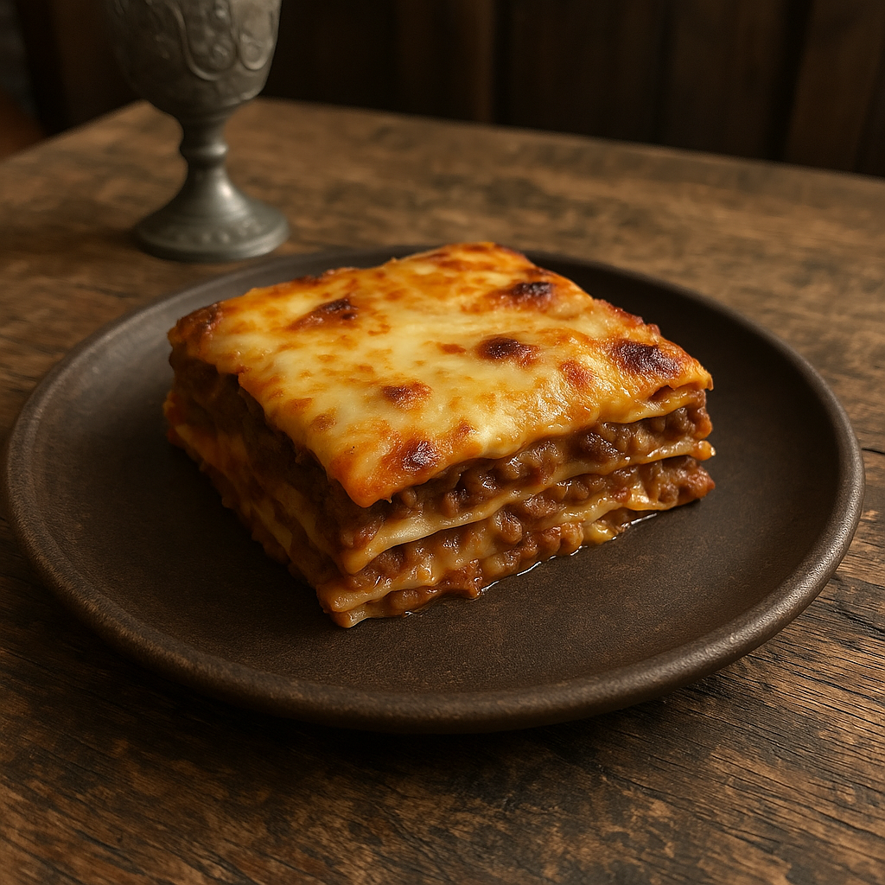

Igor's Lasagna

Description
A classic beef lasagna made with layers of pasta, rich tomato sauce, seasoned ground beef, creamy ricotta, and melted mozzarella. Baked until golden and bubbling, this comfort food favorite is perfect for any occasion.
Ingredients
- Lasagna noodles
- Ground beef
- Tomato sauce
- Ricotta cheese
- Mozzarella cheese
- Parmesan cheese (optional)
- Onion
- Garlic
- Olive Oil
- Salt
- Pepper
- Italian seasoning (or oregano + basil
Steps
- Boil the lasagna noodles according to the package instructions.
- In a pan, sauté onion and garlic in olive oil.
- Add ground beef and cook until browned.
- Pour in tomato sauce and let it simmer for 10 minutes.
- Preheat the oven to 180°C (350°F).
- In a baking dish, spread a layer of meat sauce.
- Add a layer of noodles, then ricotta, and mozzarella.
- Repeat the layers until all ingredients are used.
- Top with mozzarella and parmesan cheese.
- Bake for 30–35 minutes until golden and bubbly.
- Let it rest for 10 minutes before serving.
Back to all recipes